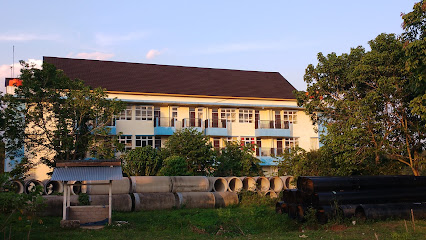
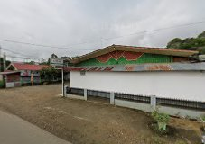
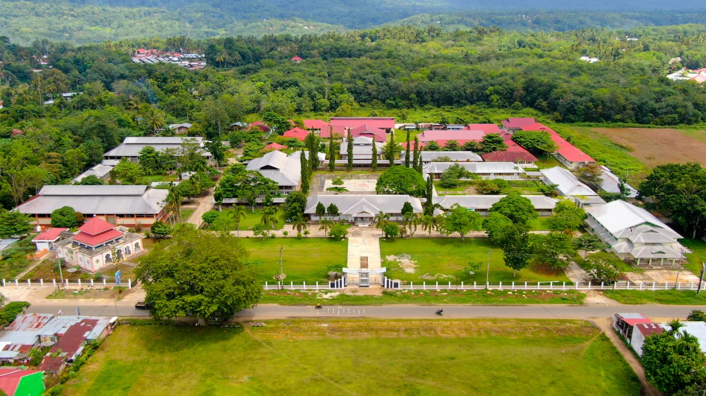

<!doctype html>
<html lang="en">
  <head>
    <meta charset="UTF-8" />
    <meta name="viewport" content="width=device-width, initial-scale=1.0" />
    <title>Peta PSDKU Tanah Datar</title>
    <link rel="stylesheet" href="dist/leaflet.css" />
    <style>
      #map {
        position: absolute;
        top: 0;
        left: 0;
        right: 0;
        bottom: 0;
      }
    </style>
  </head>
  <body>
    <div id="map"></div>
    <script src="dist/leaflet.js"></script>
    <script>
      var map = L.map("map").setView(
        [-0.5057075510942677, 100.77881405402046],
        17
      );

      L.tileLayer(
        "https://api.maptiler.com/maps/streets-v4/{z}/{x}/{y}.png?key=wDzpqtI5oYrYifwGGStF",
        {
          tileSize: 512,
          zoomOffset: -1,
          minZoom: 1,
          attribution:
            '<a href="https://www.maptiler.com/copyright/" target="_blank">&copy; MapTiler</a> <a href="https://www.openstreetmap.org/copyright" target="_blank">&copy; OpenStreetMap contributors</a>',
        }
      ).addTo(map);

      var lokasi = [
        [
          -0.5057075510942677,
          100.77881405402046,
          "pic/collage.png",
          `<p style = "text-align: center;"></p><p>Program Studi D3 Sistem Informasi (PSDKU Tanah Datar) berfokus pada pengembangan dan pengelolaan sistem informasi untuk mendukung operasional bisnis <a href ="https://ti.pnp.ac.id/" target="_blank">Baca Selengkapnya</a></p>`,
        ], // PSDKU
        [
          -0.5065750195824847,
          100.7783940399528,
          "pic/clinic.png",
          `<p style = "text-align: center;"></p><p>Regadil</p>`,
        ], // Regadil
        [
          -0.5041204268398912,
          100.77883975557044,
          "pic/school.png",
          `<p style = "text-align: center;"></p><p>SMKN 1 Lintau Buo adalah sekolah menengah kejuruan negeri yang berlokasi di Jalan Raya Tigo Jangko, Kecamatan Lintau Buo, Kabupaten Tanah Datar, Sumatera Barat. Sekolah ini memiliki 37 rombongan belajar (rombel) dan fokus pada pengembangan keterampilan siswa agar siap menghadapi dunia kerja modern dengan beragam jurusan unggulan.  <a href ="https://smkn1lintaubuo.sch.id" target="_blank">Baca Selengkapnya</a></p>`,
        ], // SMK
      ];

      for (var i = 0; i < lokasi.length; i++) {
        var greenIcon = L.icon({
          iconUrl: lokasi[i][2],
          //   shadowUrl:
          // "https://leafletjs.com/examples/custom-icons/leaf-shadow.png",

          iconSize: [38, 38], // size of the icon
          //   shadowSize: [50, 64], // size of the shadow
          iconAnchor: [22, 94], // point of the icon which will correspond to marker's location
          //   shadowAnchor: [4, 62], // the same for the shadow
          popupAnchor: [-3, -76], // point from which the popup should open relative to the iconAnchor
        });
        var marker = new L.marker([lokasi[i][0], lokasi[i][1]], {
          icon: greenIcon,
        })
          .bindPopup(lokasi[i][3])
          .addTo(map);
      }
    </script>
  </body>
</html>
